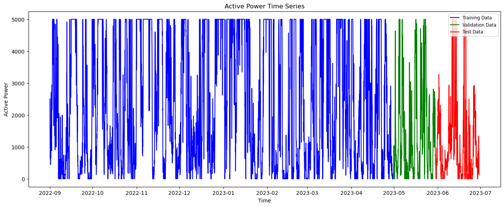
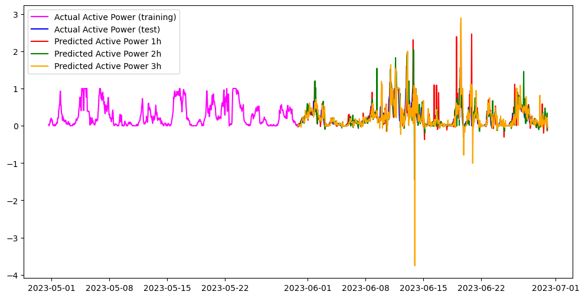

import pandas as pd
import numpy as np
import matplotlib.pyplot as plt
import time
import logging
from sklearn.preprocessing import MinMaxScaler
from sklearn.preprocessing import StandardScaler
from sklearn.model_selection import train_test_split
from sklearn.metrics import mean_absolute_errorLSTM Forecasting with Nixtla’s NeuralForecast
Dataset: AV
This notebook demonstrates how to use the classic LTM forecasting model described in:
The implementation we use is provided by Nixtla’s NeuralForecast library:
Important note:
This notebook uses the following conda environments:
- Under linux: tfm_cc, described in the tfm_cc.yml file (see environments folder).
- Under macOS: tfm_cc_nixtla, described in the tfm_cc_nixtla.yml file (see environments folder).
Execution Notes:
The run times that appear below correspond to the execution of the notebook in a Linux machine under Ubuntu 22.04 LTS with Intel Core i7-10870H CPU (2.20GHz), 64GB of RAM, NVIDIA GeForce RTX 3060 Laptop GPU with 6Gb VRAM.
Load basic libraries
Warning: Model specific libraries will be loaded below.
Load dataset
file_path = "../../data/filtered_df.csv"
df = pd.read_csv(file_path, delimiter=';')
df.head()| time | Active_Power | Wind_speed_tower | Preassure | Generator_Speed | F1_v(90).Mean | F1_v(80).Mean | F1_v(70).Mean | F1_v(60).Mean | F1_v(50).Mean | F1_v(40).Mean | F1_v(30).Mean | |
|---|---|---|---|---|---|---|---|---|---|---|---|---|
| 0 | 01/09/2022 0:00 | 2505.48220 | 9.057124 | 1012.38360 | 1121.2102 | 9.023969 | 3.97405 | 9.076108 | 3.82628 | 8.992466 | 3.39136 | 8.827003 |
| 1 | 01/09/2022 1:00 | 1762.24210 | 8.078237 | 1012.41210 | 1073.9020 | 8.110137 | 3.97405 | 8.151952 | 3.82628 | 8.076786 | 3.39136 | 8.005285 |
| 2 | 01/09/2022 2:00 | 1460.83560 | 7.712017 | 1012.29083 | 1021.2429 | 7.527431 | 3.97405 | 7.615797 | 3.82628 | 7.517593 | 3.39136 | 7.461551 |
| 3 | 01/09/2022 3:00 | 926.81006 | 6.672135 | 1012.15690 | 894.0004 | 6.566134 | 3.97405 | 6.637816 | 3.82628 | 6.571112 | 3.39136 | 6.550666 |
| 4 | 01/09/2022 4:00 | 671.34590 | 6.100095 | 1012.09424 | 821.4349 | 5.988185 | 3.97405 | 6.049537 | 3.82628 | 5.986922 | 3.39136 | 5.982606 |
Set datetime format and index
df['time'] = pd.to_datetime(df['time'], format='%d/%m/%Y %H:%M')
df.set_index('time', inplace=True)
df.head()| Active_Power | Wind_speed_tower | Preassure | Generator_Speed | F1_v(90).Mean | F1_v(80).Mean | F1_v(70).Mean | F1_v(60).Mean | F1_v(50).Mean | F1_v(40).Mean | F1_v(30).Mean | |
|---|---|---|---|---|---|---|---|---|---|---|---|
| time | |||||||||||
| 2022-09-01 00:00:00 | 2505.48220 | 9.057124 | 1012.38360 | 1121.2102 | 9.023969 | 3.97405 | 9.076108 | 3.82628 | 8.992466 | 3.39136 | 8.827003 |
| 2022-09-01 01:00:00 | 1762.24210 | 8.078237 | 1012.41210 | 1073.9020 | 8.110137 | 3.97405 | 8.151952 | 3.82628 | 8.076786 | 3.39136 | 8.005285 |
| 2022-09-01 02:00:00 | 1460.83560 | 7.712017 | 1012.29083 | 1021.2429 | 7.527431 | 3.97405 | 7.615797 | 3.82628 | 7.517593 | 3.39136 | 7.461551 |
| 2022-09-01 03:00:00 | 926.81006 | 6.672135 | 1012.15690 | 894.0004 | 6.566134 | 3.97405 | 6.637816 | 3.82628 | 6.571112 | 3.39136 | 6.550666 |
| 2022-09-01 04:00:00 | 671.34590 | 6.100095 | 1012.09424 | 821.4349 | 5.988185 | 3.97405 | 6.049537 | 3.82628 | 5.986922 | 3.39136 | 5.982606 |
df.info()<class 'pandas.core.frame.DataFrame'>
DatetimeIndex: 7248 entries, 2022-09-01 00:00:00 to 2023-06-29 23:00:00
Data columns (total 11 columns):
# Column Non-Null Count Dtype
--- ------ -------------- -----
0 Active_Power 7248 non-null float64
1 Wind_speed_tower 7248 non-null float64
2 Preassure 7248 non-null float64
3 Generator_Speed 7248 non-null float64
4 F1_v(90).Mean 7162 non-null float64
5 F1_v(80).Mean 7162 non-null float64
6 F1_v(70).Mean 7162 non-null float64
7 F1_v(60).Mean 7162 non-null float64
8 F1_v(50).Mean 7162 non-null float64
9 F1_v(40).Mean 7162 non-null float64
10 F1_v(30).Mean 7162 non-null float64
dtypes: float64(11)
memory usage: 679.5 KBIn this example, we only use the following variables:
df = df.iloc[:, :4]
df.info()<class 'pandas.core.frame.DataFrame'>
DatetimeIndex: 7248 entries, 2022-09-01 00:00:00 to 2023-06-29 23:00:00
Data columns (total 4 columns):
# Column Non-Null Count Dtype
--- ------ -------------- -----
0 Active_Power 7248 non-null float64
1 Wind_speed_tower 7248 non-null float64
2 Preassure 7248 non-null float64
3 Generator_Speed 7248 non-null float64
dtypes: float64(4)
memory usage: 283.1 KBCheck for missing values, time gaps, and duplicated dates
There are no missing data in this dataset
print(df.isna().sum())Active_Power 0
Wind_speed_tower 0
Preassure 0
Generator_Speed 0
dtype: int64duplicate_dates = df.index[df.index.duplicated(keep='first')]
print(f"Number of duplicate timestamps: {len(duplicate_dates)}")
print(duplicate_dates)Number of duplicate timestamps: 0
DatetimeIndex([], dtype='datetime64[ns]', name='time', freq=None)expected_range = pd.date_range(start=df.index.min(), end=df.index.max(), freq='h')
missing_dates = expected_range.difference(df.index)
print(f"Number of missing timestamps: {len(missing_dates)}")
print(missing_dates[:30]) # show first 10 missing onesNumber of missing timestamps: 0
DatetimeIndex([], dtype='datetime64[ns]', freq='h')Target and exogenous variables
target = 'Active_Power'
features = [col for col in df.columns if col != target]
features = features[:1]
features['Wind_speed_tower']df = df[features + [target]]
df| Wind_speed_tower | Active_Power | |
|---|---|---|
| time | ||
| 2022-09-01 00:00:00 | 9.057124 | 2505.48220 |
| 2022-09-01 01:00:00 | 8.078237 | 1762.24210 |
| 2022-09-01 02:00:00 | 7.712017 | 1460.83560 |
| 2022-09-01 03:00:00 | 6.672135 | 926.81006 |
| 2022-09-01 04:00:00 | 6.100095 | 671.34590 |
| ... | ... | ... |
| 2023-06-29 19:00:00 | 6.510803 | 843.02400 |
| 2023-06-29 20:00:00 | 6.739559 | 954.61980 |
| 2023-06-29 21:00:00 | 5.570358 | 530.78204 |
| 2023-06-29 22:00:00 | 5.017759 | 316.17050 |
| 2023-06-29 23:00:00 | 4.197770 | 118.98179 |
7248 rows × 2 columns
Train / Validation / Test split
We select the following lengths for the train, validation, and test sets:
train_len = 5800 # approx int(np.ceil(df.shape[0] * 0.8))
print(f"Train length: {train_len}")
val_len = (df.shape[0] - train_len) // 2
print(f"Validation length: {val_len}")
test_len = df.shape[0] - train_len - val_len
print(f"Test length: {test_len}")Train length: 5800
Validation length: 724
Test length: 724And we split the time series into train, validation, and test sets:
train_df = df.iloc[:train_len]
train_df| Wind_speed_tower | Active_Power | |
|---|---|---|
| time | ||
| 2022-09-01 00:00:00 | 9.057124 | 2505.482200 |
| 2022-09-01 01:00:00 | 8.078237 | 1762.242100 |
| 2022-09-01 02:00:00 | 7.712017 | 1460.835600 |
| 2022-09-01 03:00:00 | 6.672135 | 926.810060 |
| 2022-09-01 04:00:00 | 6.100095 | 671.345900 |
| ... | ... | ... |
| 2023-04-30 11:00:00 | 4.004780 | 150.152160 |
| 2023-04-30 12:00:00 | 3.007964 | 0.000000 |
| 2023-04-30 13:00:00 | 1.408475 | 8.929723 |
| 2023-04-30 14:00:00 | 1.616868 | 13.570722 |
| 2023-04-30 15:00:00 | 2.700079 | 0.000000 |
5800 rows × 2 columns
val_df = df.iloc[train_len:(train_len + val_len)]
val_df| Wind_speed_tower | Active_Power | |
|---|---|---|
| time | ||
| 2023-04-30 16:00:00 | 3.812496 | 178.24010 |
| 2023-04-30 17:00:00 | 3.483967 | 0.00000 |
| 2023-04-30 18:00:00 | 4.239082 | 147.56505 |
| 2023-04-30 19:00:00 | 4.626727 | 274.05078 |
| 2023-04-30 20:00:00 | 5.066225 | 449.61557 |
| ... | ... | ... |
| 2023-05-30 15:00:00 | 3.378462 | 0.00000 |
| 2023-05-30 16:00:00 | 3.660170 | 158.17046 |
| 2023-05-30 17:00:00 | 3.581221 | 148.18813 |
| 2023-05-30 18:00:00 | 2.826163 | 0.00000 |
| 2023-05-30 19:00:00 | 2.957112 | 0.00000 |
724 rows × 2 columns
test_df = df.iloc[(train_len + val_len):]
test_df| Wind_speed_tower | Active_Power | |
|---|---|---|
| time | ||
| 2023-05-30 20:00:00 | 3.526134 | 141.81660 |
| 2023-05-30 21:00:00 | 3.746263 | 170.12517 |
| 2023-05-30 22:00:00 | 2.346617 | 0.00000 |
| 2023-05-30 23:00:00 | 2.987464 | 0.00000 |
| 2023-05-31 00:00:00 | 3.670265 | 159.70273 |
| ... | ... | ... |
| 2023-06-29 19:00:00 | 6.510803 | 843.02400 |
| 2023-06-29 20:00:00 | 6.739559 | 954.61980 |
| 2023-06-29 21:00:00 | 5.570358 | 530.78204 |
| 2023-06-29 22:00:00 | 5.017759 | 316.17050 |
| 2023-06-29 23:00:00 | 4.197770 | 118.98179 |
724 rows × 2 columns
Time series split visualization
plt.figure(figsize=(16, 6))
plt.plot(train_df["Active_Power"], label="Training Data", color='blue')
plt.plot(val_df["Active_Power"], label="Validation Data", color='green')
plt.plot(test_df["Active_Power"], label="Test Data", color='red')
plt.title("Active Power Time Series")
plt.xlabel("Time")
plt.ylabel("Active Power")
plt.legend(fontsize='small')
plt.show();plt.close()
We will also create copies of the train, validation, and test sets to use them later in the notebook.
train_df_original = train_df.copy()
val_df_original = val_df.copy()
test_df_original = test_df.copy()Data scaling
We apply the min-max scaler fitted to the training set to the train, validation, and test sets (to avoid data leakage).
from sklearn.preprocessing import MinMaxScaler
scaler = MinMaxScaler()
scaler.set_output(transform='pandas')
scaler.fit(train_df)
train_df = scaler.transform(train_df)
val_df = scaler.transform(val_df)
test_df = scaler.transform(test_df)Let us check the result
train_df.describe().transpose()| count | mean | std | min | 25% | 50% | 75% | max | |
|---|---|---|---|---|---|---|---|---|
| Wind_speed_tower | 5800.0 | 0.370283 | 0.181766 | 0.0 | 0.230103 | 0.341549 | 0.499679 | 1.0 |
| Active_Power | 5800.0 | 0.502231 | 0.396148 | 0.0 | 0.112238 | 0.416912 | 1.000000 | 1.0 |
Nixtla Dataset Format
Convert to NeuralForecast format (ds, y, unique_id)
train_df_nf = train_df.copy()
train_df_nf = train_df_nf.rename(columns={target: 'y'})
train_df_nf['ds'] = train_df_nf.index
train_df_nf['unique_id'] = 'series_1'Move ds and unique_id to front
train_df_nf = train_df_nf[['unique_id', 'ds', 'y'] + features]
train_df_nf| unique_id | ds | y | Wind_speed_tower | |
|---|---|---|---|---|
| time | ||||
| 2022-09-01 00:00:00 | series_1 | 2022-09-01 00:00:00 | 0.501096 | 0.372027 |
| 2022-09-01 01:00:00 | series_1 | 2022-09-01 01:00:00 | 0.352448 | 0.331578 |
| 2022-09-01 02:00:00 | series_1 | 2022-09-01 02:00:00 | 0.292167 | 0.316446 |
| 2022-09-01 03:00:00 | series_1 | 2022-09-01 03:00:00 | 0.185362 | 0.273476 |
| 2022-09-01 04:00:00 | series_1 | 2022-09-01 04:00:00 | 0.134269 | 0.249839 |
| ... | ... | ... | ... | ... |
| 2023-04-30 11:00:00 | series_1 | 2023-04-30 11:00:00 | 0.030030 | 0.163258 |
| 2023-04-30 12:00:00 | series_1 | 2023-04-30 12:00:00 | 0.000000 | 0.122068 |
| 2023-04-30 13:00:00 | series_1 | 2023-04-30 13:00:00 | 0.001786 | 0.055975 |
| 2023-04-30 14:00:00 | series_1 | 2023-04-30 14:00:00 | 0.002714 | 0.064586 |
| 2023-04-30 15:00:00 | series_1 | 2023-04-30 15:00:00 | 0.000000 | 0.109346 |
5800 rows × 4 columns
Same for validation and test sets
val_df_nf = val_df.copy()
val_df_nf = val_df_nf.rename(columns={target: 'y'})
val_df_nf['ds'] = val_df_nf.index
val_df_nf['unique_id'] = 'series_1'
val_df_nf = val_df_nf[['unique_id', 'ds', 'y'] + features]
val_df_nf| unique_id | ds | y | Wind_speed_tower | |
|---|---|---|---|---|
| time | ||||
| 2023-04-30 16:00:00 | series_1 | 2023-04-30 16:00:00 | 0.035648 | 0.155312 |
| 2023-04-30 17:00:00 | series_1 | 2023-04-30 17:00:00 | 0.000000 | 0.141737 |
| 2023-04-30 18:00:00 | series_1 | 2023-04-30 18:00:00 | 0.029513 | 0.172939 |
| 2023-04-30 19:00:00 | series_1 | 2023-04-30 19:00:00 | 0.054810 | 0.188957 |
| 2023-04-30 20:00:00 | series_1 | 2023-04-30 20:00:00 | 0.089923 | 0.207118 |
| ... | ... | ... | ... | ... |
| 2023-05-30 15:00:00 | series_1 | 2023-05-30 15:00:00 | 0.000000 | 0.137377 |
| 2023-05-30 16:00:00 | series_1 | 2023-05-30 16:00:00 | 0.031634 | 0.149018 |
| 2023-05-30 17:00:00 | series_1 | 2023-05-30 17:00:00 | 0.029638 | 0.145756 |
| 2023-05-30 18:00:00 | series_1 | 2023-05-30 18:00:00 | 0.000000 | 0.114555 |
| 2023-05-30 19:00:00 | series_1 | 2023-05-30 19:00:00 | 0.000000 | 0.119966 |
724 rows × 4 columns
test_df_nf = test_df.copy()
test_df_nf = test_df_nf.rename(columns={target: 'y'})
test_df_nf['ds'] = test_df_nf.index
test_df_nf['unique_id'] = 'series_1'
test_df_nf = test_df_nf[['unique_id', 'ds', 'y'] + features]
test_df_nf| unique_id | ds | y | Wind_speed_tower | |
|---|---|---|---|---|
| time | ||||
| 2023-05-30 20:00:00 | series_1 | 2023-05-30 20:00:00 | 0.028363 | 0.143479 |
| 2023-05-30 21:00:00 | series_1 | 2023-05-30 21:00:00 | 0.034025 | 0.152575 |
| 2023-05-30 22:00:00 | series_1 | 2023-05-30 22:00:00 | 0.000000 | 0.094740 |
| 2023-05-30 23:00:00 | series_1 | 2023-05-30 23:00:00 | 0.000000 | 0.121221 |
| 2023-05-31 00:00:00 | series_1 | 2023-05-31 00:00:00 | 0.031941 | 0.149435 |
| ... | ... | ... | ... | ... |
| 2023-06-29 19:00:00 | series_1 | 2023-06-29 19:00:00 | 0.168605 | 0.266810 |
| 2023-06-29 20:00:00 | series_1 | 2023-06-29 20:00:00 | 0.190924 | 0.276262 |
| 2023-06-29 21:00:00 | series_1 | 2023-06-29 21:00:00 | 0.106156 | 0.227949 |
| 2023-06-29 22:00:00 | series_1 | 2023-06-29 22:00:00 | 0.063234 | 0.205115 |
| 2023-06-29 23:00:00 | series_1 | 2023-06-29 23:00:00 | 0.023796 | 0.171232 |
724 rows × 4 columns
Create a joint dataset with train and validation to fit into Nixtla’s framework.
train_val_df = pd.concat([train_df_nf, val_df_nf], axis=0)
train_val_df.reset_index(drop=True, inplace=True)
train_val_df.info()<class 'pandas.core.frame.DataFrame'>
RangeIndex: 6524 entries, 0 to 6523
Data columns (total 4 columns):
# Column Non-Null Count Dtype
--- ------ -------------- -----
0 unique_id 6524 non-null object
1 ds 6524 non-null datetime64[ns]
2 y 6524 non-null float64
3 Wind_speed_tower 6524 non-null float64
dtypes: datetime64[ns](1), float64(2), object(1)
memory usage: 204.0+ KBAnd similarly a full dataset with train, validation and test sets.
full_df_nf = pd.concat([train_df_nf, val_df_nf, test_df_nf], axis=0)
full_df_nf.reset_index(drop=True, inplace=True)
full_df_nf.info()<class 'pandas.core.frame.DataFrame'>
RangeIndex: 7248 entries, 0 to 7247
Data columns (total 4 columns):
# Column Non-Null Count Dtype
--- ------ -------------- -----
0 unique_id 7248 non-null object
1 ds 7248 non-null datetime64[ns]
2 y 7248 non-null float64
3 Wind_speed_tower 7248 non-null float64
dtypes: datetime64[ns](1), float64(2), object(1)
memory usage: 226.6+ KBSet the forecast horizon and input length
horizon = 3
input_size = 6AutoLSTM
import logging
import optuna
import torch
from neuralforecast import NeuralForecast
from neuralforecast.losses.pytorch import MAECheck if CUDA is available (Linux machines)
optuna.logging.set_verbosity(optuna.logging.WARNING)
logging.getLogger('pytorch_lightning').setLevel(logging.ERROR)
torch.set_float32_matmul_precision('high')if torch.cuda.is_available():
print(torch.cuda.device_count(), torch.cuda.current_device(),torch.cuda.get_device_name(0))1 0 NVIDIA GeForce RTX 3060 Laptop GPUDefine the hyperparameters for the model. The first group is fixed and shouldn’t changed from model to model. The second group is the hyperparameters that are tuned by the AutoTimeXer algorithm using Optuna as backend and may be specific to the model’s architecture. The documentations for the hyperparameters can be seen at the TimeXer and AutoTimeXer documentation.
def config_LSTM(trial: optuna.Trial) -> dict:
return {
# Fixed
"input_size": input_size,
"futr_exog_list": ['Wind_speed_tower'],
# "scaler_type":'standard',
"max_steps": 300,
"val_check_steps": 50,
"random_seed": 42,
##### Optuna, model specific
# "n_series": 1, # Number of time series
"encoder_n_layers": trial.suggest_int("encoder_n_layers", 1, 4),
"encoder_hidden_size": trial.suggest_categorical("encoder_hidden_size", [64, 128, 256]),
"encoder_dropout": trial.suggest_float("encoder_dropout", 0.0, 0.3),
"decoder_layers": trial.suggest_int("decoder_layers", 1, 4),
"decoder_hidden_size": trial.suggest_categorical("decoder_hidden_size", [64, 128, 256]),
"learning_rate": trial.suggest_float("learning_rate", 1e-4, 1e-2, log=True)
}Next we define the AutoLSTM object. This includes the num_samples parameter, which is the number of samples to be used for the Optuna search. The loss is also an essential parameter of this object.
from neuralforecast.auto import AutoLSTM
model = AutoLSTM(
h=horizon,
config=config_LSTM,
backend='optuna',
search_alg=optuna.samplers.TPESampler(),
gpus=torch.cuda.device_count(),
################
num_samples=100,
loss=MAE())
With this we are ready to perform the search. We pass the size of the validation set to be used for Optuna in selecting the hyperparameters.
%%capture
logging.getLogger("lightning_fabric.utilities.seed").setLevel(logging.WARNING)
start_time = time.time()
nf = NeuralForecast(models=[model], freq='H')
nf.fit(df=train_val_df, val_size=val_df_nf.shape[0])
end_time = time.time()
elapsed_time = end_time - start_timeprint(f"Elapsed time: {elapsed_time / 60:.2f} minutes")Elapsed time: 6.64 minutesWhen the search is finished the final model is in nf.models[0] and it has a results object that contains all the fit information, including the Optuna study object. In particular, the best_trial attribute has in turn an attribute which is the dictionary of the best hyperparameters.
type(nf.models[0].results)optuna.study.study.Studybest_params = nf.models[0].results.best_trial.params
best_params{'encoder_n_layers': 1,
'encoder_hidden_size': 256,
'encoder_dropout': 0.199812192597774,
'decoder_layers': 4,
'decoder_hidden_size': 64,
'learning_rate': 0.001973204568379968}LSTM modeling
Using the best hyperparameters we can now fit a final model. This is done by passing the best hyperparameters to the model and then fitting it to the training + validation set.
from neuralforecast.models.lstm import LSTM
model = LSTM(
h=horizon,
n_series=1,
input_size=input_size,
loss=MAE(),
max_steps=600,
random_seed=42,
**best_params
)/home/fernando/miniconda3/envs/tfm_cc/lib/python3.10/site-packages/torch/nn/modules/rnn.py:123: UserWarning: dropout option adds dropout after all but last recurrent layer, so non-zero dropout expects num_layers greater than 1, but got dropout=0.199812192597774 and num_layers=1
warnings.warn(NOTE: We need to set the EXOGENOUS_HIST attribute to True because the current Nixtla implementation of TimeXer does not expose this attibute in the class argument list.
model.EXOGENOUS_HIST = True
model.hist_exog_list= ['Wind_speed_tower']%%capture
logging.getLogger("lightning_fabric.utilities.seed").setLevel(logging.WARNING)
start_time = time.time()
nf = NeuralForecast(models=[model], freq='H')
nf.fit(df=train_val_df)
end_time = time.time()
elapsed_time = end_time - start_timeprint(f"Elapsed time: {elapsed_time / 60:.2f} minutes")Elapsed time: 0.12 minutesModel Performance Evaluation
We create the rolling_df dataframe that contains the series data up to the time instant in which we make a prediction that corresponds to the first time instant in the test set. That prediction corresponds to the maximum value of the prediction horizon.
rolling_df = full_df_nf.iloc[:(train_len + val_len + 1 - horizon)]
rolling_df.tail(2)| unique_id | ds | y | Wind_speed_tower | |
|---|---|---|---|---|
| 6520 | series_1 | 2023-05-30 16:00:00 | 0.031634 | 0.149018 |
| 6521 | series_1 | 2023-05-30 17:00:00 | 0.029638 | 0.145756 |
Now to start the evaluation we fit the model to this dataset and get the predictions. We will not use all of them, only the last.
%%capture
nf.fit(df=rolling_df)%%capture
rolling_preds = nf.predict()
rolling_predsNote the last of these predictions corresponds to the first time instant in the test set.
Now we create a dictionary (of dataframes) to store the predictions for each value k from 1 to the max of the prediction horizon. The weird (k-1):k bit below is to prevent pandas from collapsing the row into a series!
preds_df = {}
for k in range(1, horizon + 1):
preds_df_name = str(k) + "h" # String variable for the new name
preds_df[preds_df_name] = rolling_preds.copy().iloc[(k-1):k, :]
Initially we store the predictions we obtained above in the dictionary (only the last one of these will actually be useful for comparison with the test set, but the others serve the purpose of dictionary initialisation).
preds_df['1h']| unique_id | ds | LSTM | |
|---|---|---|---|
| 0 | series_1 | 2023-05-30 18:00:00 | 0.02204 |
preds_df['2h']| unique_id | ds | LSTM | |
|---|---|---|---|
| 1 | series_1 | 2023-05-30 19:00:00 | 0.023974 |
preds_df['3h']| unique_id | ds | LSTM | |
|---|---|---|---|
| 2 | series_1 | 2023-05-30 20:00:00 | 0.025248 |
The main tool for evaluation is the for loop below. In each iteration we add one time instant to the rolling_df dataframe and then we fit the model to this dataframe. We then obtain the predictions for this augmented dataset and our forecasting horizon. And we store each of them in the corresponing dataframe inside the dictionary.
start_time = time.time()%%capture
logging.getLogger("lightning_fabric.utilities.seed").setLevel(logging.WARNING)
# for k in range(2, 50): ## Testing
for k in range(2, len(test_df_nf) + horizon):
rolling_df = full_df_nf.iloc[:(train_len + val_len + k - horizon)]
nf.fit(df=rolling_df)
rolling_preds = nf.predict()
for h in range(1, horizon + 1):
preds_df[f'{h}h'] = pd.concat([preds_df[f'{h}h'], rolling_preds.iloc[(h - 1):h,:]], axis=0)
print(f"k = {k}")
print("#" * 20)
end_time = time.time()
elapsed_time = end_time - start_time
print(f"Elapsed time: {elapsed_time / 60:.2f} minutes")Elapsed time: 92.88 minutesFor ease of comparison and plotting we reindex the predictions dataframes in the dictionary to use ds as index.
for h in range(1, horizon + 1):
preds_df[f'{h}h'].set_index('ds', inplace=True)After doing that they look like this:
preds_df['1h'] | unique_id | LSTM | |
|---|---|---|
| ds | ||
| 2023-05-30 18:00:00 | series_1 | 0.022040 |
| 2023-05-30 19:00:00 | series_1 | 0.023314 |
| 2023-05-30 20:00:00 | series_1 | -0.025724 |
| 2023-05-30 21:00:00 | series_1 | 0.004536 |
| 2023-05-30 22:00:00 | series_1 | 0.057137 |
| ... | ... | ... |
| 2023-06-29 19:00:00 | series_1 | 0.158810 |
| 2023-06-29 20:00:00 | series_1 | 0.201081 |
| 2023-06-29 21:00:00 | series_1 | 0.247066 |
| 2023-06-29 22:00:00 | series_1 | 0.203785 |
| 2023-06-29 23:00:00 | series_1 | -0.131129 |
726 rows × 2 columns
preds_df['2h'] | unique_id | LSTM | |
|---|---|---|
| ds | ||
| 2023-05-30 19:00:00 | series_1 | 0.023974 |
| 2023-05-30 20:00:00 | series_1 | 0.030836 |
| 2023-05-30 21:00:00 | series_1 | -0.016448 |
| 2023-05-30 22:00:00 | series_1 | -0.001236 |
| 2023-05-30 23:00:00 | series_1 | 0.040573 |
| ... | ... | ... |
| 2023-06-29 20:00:00 | series_1 | 0.178761 |
| 2023-06-29 21:00:00 | series_1 | 0.158973 |
| 2023-06-29 22:00:00 | series_1 | 0.156605 |
| 2023-06-29 23:00:00 | series_1 | 0.341389 |
| 2023-06-30 00:00:00 | series_1 | -0.110548 |
726 rows × 2 columns
preds_df['3h'] | unique_id | LSTM | |
|---|---|---|
| ds | ||
| 2023-05-30 20:00:00 | series_1 | 0.025248 |
| 2023-05-30 21:00:00 | series_1 | -0.002121 |
| 2023-05-30 22:00:00 | series_1 | 0.000561 |
| 2023-05-30 23:00:00 | series_1 | 0.023607 |
| 2023-05-31 00:00:00 | series_1 | 0.028626 |
| ... | ... | ... |
| 2023-06-29 21:00:00 | series_1 | 0.058425 |
| 2023-06-29 22:00:00 | series_1 | 0.093332 |
| 2023-06-29 23:00:00 | series_1 | 0.220171 |
| 2023-06-30 00:00:00 | series_1 | -0.013398 |
| 2023-06-30 01:00:00 | series_1 | -0.042131 |
726 rows × 2 columns
Let us plot the predictions against the test set values.
%matplotlib inline
plt.figure(figsize=(12, 6))
# plt.plot(val_df_nf["y"].tail(20), label="Actual Active Power (training)", color='magenta')
# plt.plot(test_df_nf["y"].head(20), label="Actual Active Power (test)", color='blue')
plt.plot(val_df_nf["y"], label="Actual Active Power (training)", color='magenta')
plt.plot(test_df_nf["y"], label="Actual Active Power (test)", color='blue')
plt.plot(preds_df['1h']['LSTM'][2:], label="Predicted Active Power 1h", color='red')
plt.plot(preds_df['2h']['LSTM'][1:], label="Predicted Active Power 2h", color='green')
plt.plot(preds_df['3h']['LSTM'], label="Predicted Active Power 3h", color='orange')
plt.legend()
plt.show();plt.close()
MAE computation
We will next compute the MAE for each of the predictions in the dictionary. The trickiest part here is to ensure that the predictions are aligned with the test set.
from sklearn.metrics import mean_absolute_errortest_df_nf.index.min(), test_df_nf.index.max()(Timestamp('2023-05-30 20:00:00'), Timestamp('2023-06-29 23:00:00'))test_df_nf['Wind_speed_tower']time
2023-05-30 20:00:00 0.143479
2023-05-30 21:00:00 0.152575
2023-05-30 22:00:00 0.094740
2023-05-30 23:00:00 0.121221
2023-05-31 00:00:00 0.149435
...
2023-06-29 19:00:00 0.266810
2023-06-29 20:00:00 0.276262
2023-06-29 21:00:00 0.227949
2023-06-29 22:00:00 0.205115
2023-06-29 23:00:00 0.171232
Name: Wind_speed_tower, Length: 724, dtype: float64mape1h_df = preds_df['1h'].copy()[2:][['LSTM']]
mape1h_df| LSTM | |
|---|---|
| ds | |
| 2023-05-30 20:00:00 | -0.025724 |
| 2023-05-30 21:00:00 | 0.004536 |
| 2023-05-30 22:00:00 | 0.057137 |
| 2023-05-30 23:00:00 | -0.014080 |
| 2023-05-31 00:00:00 | 0.004423 |
| ... | ... |
| 2023-06-29 19:00:00 | 0.158810 |
| 2023-06-29 20:00:00 | 0.201081 |
| 2023-06-29 21:00:00 | 0.247066 |
| 2023-06-29 22:00:00 | 0.203785 |
| 2023-06-29 23:00:00 | -0.131129 |
724 rows × 1 columns
We need to add the exogenous variables as they were used by the scaler.
mape1h_df.insert(0, 'Wind_speed_tower', test_df_nf['Wind_speed_tower'].values)
mape1h_df| Wind_speed_tower | LSTM | |
|---|---|---|
| ds | ||
| 2023-05-30 20:00:00 | 0.143479 | -0.025724 |
| 2023-05-30 21:00:00 | 0.152575 | 0.004536 |
| 2023-05-30 22:00:00 | 0.094740 | 0.057137 |
| 2023-05-30 23:00:00 | 0.121221 | -0.014080 |
| 2023-05-31 00:00:00 | 0.149435 | 0.004423 |
| ... | ... | ... |
| 2023-06-29 19:00:00 | 0.266810 | 0.158810 |
| 2023-06-29 20:00:00 | 0.276262 | 0.201081 |
| 2023-06-29 21:00:00 | 0.227949 | 0.247066 |
| 2023-06-29 22:00:00 | 0.205115 | 0.203785 |
| 2023-06-29 23:00:00 | 0.171232 | -0.131129 |
724 rows × 2 columns
# mape1h_df.columns = ["Wind_speed_tower", "Active_Power"]
mean_absolute_error(scaler.inverse_transform(mape1h_df)[:,1], test_df_original["Active_Power"])530.9137788318528Mae for 2h preddictions
mape2h_df = preds_df['2h'].copy()[1:][:-1][['LSTM']]
mape2h_df| LSTM | |
|---|---|
| ds | |
| 2023-05-30 20:00:00 | 0.030836 |
| 2023-05-30 21:00:00 | -0.016448 |
| 2023-05-30 22:00:00 | -0.001236 |
| 2023-05-30 23:00:00 | 0.040573 |
| 2023-05-31 00:00:00 | 0.006766 |
| ... | ... |
| 2023-06-29 19:00:00 | 0.239245 |
| 2023-06-29 20:00:00 | 0.178761 |
| 2023-06-29 21:00:00 | 0.158973 |
| 2023-06-29 22:00:00 | 0.156605 |
| 2023-06-29 23:00:00 | 0.341389 |
724 rows × 1 columns
mape2h_df.insert(0, 'Wind_speed_tower', test_df_nf['Wind_speed_tower'].values)
mape2h_df| Wind_speed_tower | LSTM | |
|---|---|---|
| ds | ||
| 2023-05-30 20:00:00 | 0.143479 | 0.030836 |
| 2023-05-30 21:00:00 | 0.152575 | -0.016448 |
| 2023-05-30 22:00:00 | 0.094740 | -0.001236 |
| 2023-05-30 23:00:00 | 0.121221 | 0.040573 |
| 2023-05-31 00:00:00 | 0.149435 | 0.006766 |
| ... | ... | ... |
| 2023-06-29 19:00:00 | 0.266810 | 0.239245 |
| 2023-06-29 20:00:00 | 0.276262 | 0.178761 |
| 2023-06-29 21:00:00 | 0.227949 | 0.158973 |
| 2023-06-29 22:00:00 | 0.205115 | 0.156605 |
| 2023-06-29 23:00:00 | 0.171232 | 0.341389 |
724 rows × 2 columns
# mape1h_df.columns = ["Wind_speed_tower", "Active_Power"]
mean_absolute_error(scaler.inverse_transform(mape2h_df)[:,1], test_df_original["Active_Power"])634.9447313834537Mae for 3h preddictions
mape3h_df = preds_df['3h'].copy()[:-2][['LSTM']]
mape3h_df| LSTM | |
|---|---|
| ds | |
| 2023-05-30 20:00:00 | 0.025248 |
| 2023-05-30 21:00:00 | -0.002121 |
| 2023-05-30 22:00:00 | 0.000561 |
| 2023-05-30 23:00:00 | 0.023607 |
| 2023-05-31 00:00:00 | 0.028626 |
| ... | ... |
| 2023-06-29 19:00:00 | 0.206652 |
| 2023-06-29 20:00:00 | 0.196227 |
| 2023-06-29 21:00:00 | 0.058425 |
| 2023-06-29 22:00:00 | 0.093332 |
| 2023-06-29 23:00:00 | 0.220171 |
724 rows × 1 columns
mape3h_df.insert(0, 'Wind_speed_tower', test_df_nf['Wind_speed_tower'].values)
mape3h_df| Wind_speed_tower | LSTM | |
|---|---|---|
| ds | ||
| 2023-05-30 20:00:00 | 0.143479 | 0.025248 |
| 2023-05-30 21:00:00 | 0.152575 | -0.002121 |
| 2023-05-30 22:00:00 | 0.094740 | 0.000561 |
| 2023-05-30 23:00:00 | 0.121221 | 0.023607 |
| 2023-05-31 00:00:00 | 0.149435 | 0.028626 |
| ... | ... | ... |
| 2023-06-29 19:00:00 | 0.266810 | 0.206652 |
| 2023-06-29 20:00:00 | 0.276262 | 0.196227 |
| 2023-06-29 21:00:00 | 0.227949 | 0.058425 |
| 2023-06-29 22:00:00 | 0.205115 | 0.093332 |
| 2023-06-29 23:00:00 | 0.171232 | 0.220171 |
724 rows × 2 columns
mean_absolute_error(scaler.inverse_transform(mape3h_df)[:,1], test_df_original["Active_Power"])736.1062839215297